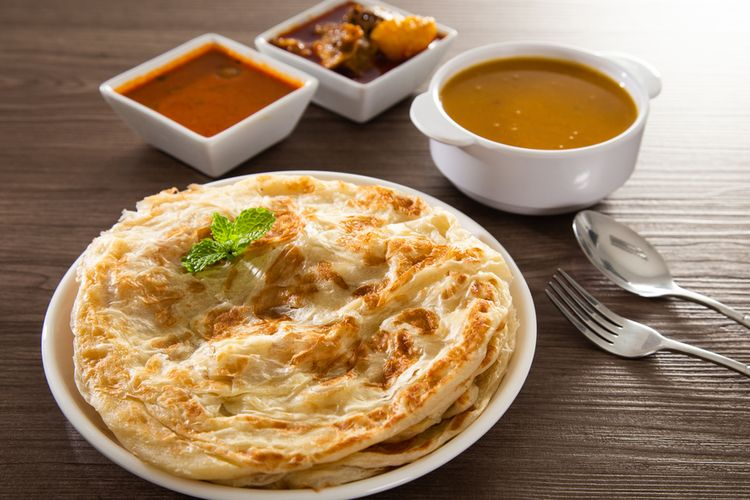

Roti canai is a traditional pan-fried flatbread made with flour, water, eggs, and fat of Indian origin, but mainly associated with Malaysia, and surrounding countries like Indonesia, Brunei, and Thailand. The dough for roti canai is repeatedly folded, so the final product has a layered texture, a soft interior, and a crispy outer layer. The most common fat used in roti canai is ghee, the traditional Indian clarified butter. It is believed that the dish originated in India when the Indian laborers who migrated to Malaysia brought the recipe and the tradition of preparing this crispy pastry to the foreign country.
Meal prep time : 21 minutes
Servings : 8